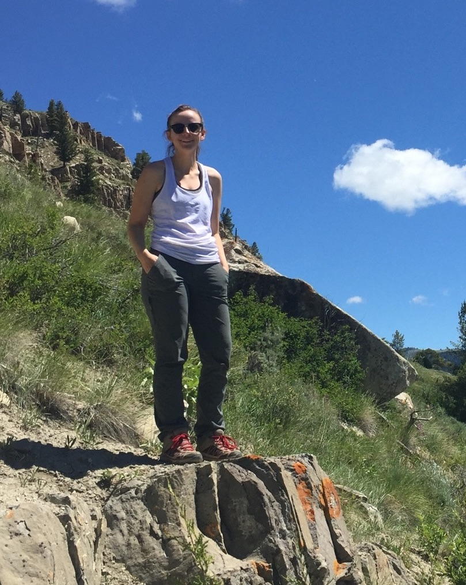

Hello!
I am a 2nd year PhD candidate in the Global Seismology and Tectonics Lab Group at the University of Arizona Department of Geosciences with Dr. Susan Beck. My research interests, broadly speaking, are centered around the dynamics of subduction zones through the lens of seismic imaging techniques. These interests have led me to a few projects in South America, some of which have included field work, both broadband and nodal.
Contact
University of Arizona
Department of Geosciences
1040 E. 4th St
Tucson, AZ 85719
GS 543
[e] rodrigueze@email.arizona.edu